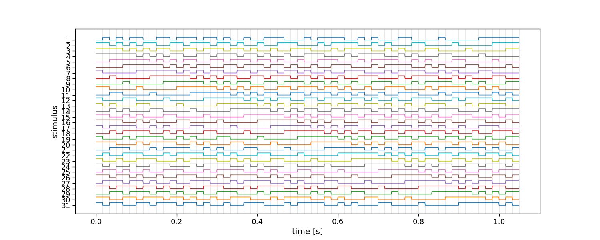
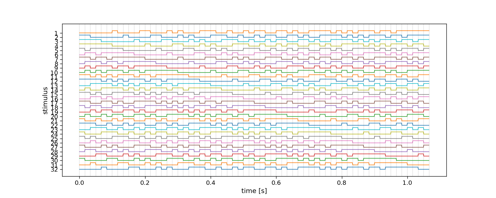

Note
Go to the end to download the full example code.
Noise codes
This tutorial shows how to generate different types of noise-codes using the PyntBCI library. Noise-codes are used to evoke the code-modulated visual evoked potential (c-VEP) as measured by EEG. For a comprehensive literature review, see [1].
References
Brain–computer interfaces based on code-modulated visual evoked potentials (c-VEP): a literature review. Journal of Neural Engineering, 18(6), 061002. DOI: 10.1088/1741-2552/ac38cf
import matplotlib.pyplot as plt
import seaborn
import pyntbci
seaborn.set_context("paper", font_scale=1.5)
The m-sequence
The m-sequence is a single code with near-optimal auto-correlation properties. Because of that, circularly shifted versions of the m-sequence can be used to generate set of stimuli. Apart from routines to generate codes, also routines exist to check whether a code is of a certain code family.
# Generate an m-sequence
mseq = pyntbci.stimulus.make_m_sequence()
print("Is m-sequence:", pyntbci.stimulus.is_m_sequence(mseq))
# Circularly shift the m-sequence
mseq = pyntbci.stimulus.shift(mseq, stride=2)
# Plot stimuli
fig, ax = plt.subplots(1, 1, figsize=(15, 6))
pyntbci.plotting.stimplot(mseq, fs=60, ax=ax)
# Plot correlation of stimuli
plt.figure(figsize=(5, 5))
rho = pyntbci.utilities.correlation(mseq, mseq)
plt.imshow(rho, vmin=-1, vmax=1, cmap="coolwarm")
cbar = plt.colorbar()
cbar.set_label("correlation")
plt.xlabel("stimulus")
plt.ylabel("stimulus")
- 
Is m-sequence: True
Text(21.916666666666664, 0.5, 'stimulus')
The Gold codes
Gold codes already come in sets. They are generated by combining two ‘preferred-pair’ of m-sequences.
# Generate an m-sequence
gold = pyntbci.stimulus.make_gold_codes()[:32, :] # select the first 32
# Plot stimuli
fig, ax = plt.subplots(1, 1, figsize=(15, 6))
pyntbci.plotting.stimplot(gold, fs=60, ax=ax)
# Plot correlation of stimuli
plt.figure(figsize=(5, 5))
rho = pyntbci.utilities.correlation(gold, gold)
plt.imshow(rho, vmin=-1, vmax=1, cmap="coolwarm")
cbar = plt.colorbar()
cbar.set_label("correlation")
plt.xlabel("stimulus")
plt.ylabel("stimulus")

Text(21.916666666666664, 0.5, 'stimulus')
Modulated Gold codes
Original m-sequences and Gold codes have a run-length distribution with a maximum length equal to the length of the shift register that was used. To limit this, codes can be modulated to contain only run-lengths of length 1 and 2.
# Generate an m-sequence
gold = pyntbci.stimulus.make_gold_codes()[:32, :] # select the first 32
print("Is Gold code:", pyntbci.stimulus.is_gold_code(gold))
# Modulate the codes
mgold = pyntbci.stimulus.modulate(gold)
# Plot stimuli
fig, ax = plt.subplots(1, 1, figsize=(15, 6))
pyntbci.plotting.stimplot(mgold, fs=60, ax=ax)
# Plot correlation of stimuli
plt.figure(figsize=(5, 5))
rho = pyntbci.utilities.correlation(mgold, mgold)
plt.imshow(rho, vmin=-1, vmax=1, cmap="coolwarm")
cbar = plt.colorbar()
cbar.set_label("correlation")
plt.xlabel("stimulus")
plt.ylabel("stimulus")
Is Gold code: True
Text(21.916666666666664, 0.5, 'stimulus')
De Bruijn sequence
Also other codes exist, such as the De Bruijn sequence.
# Generate a de Bruijn sequence.
debruijn = pyntbci.stimulus.make_de_bruijn_sequence()[:32, :] # select the first 32
print("Is de Bruijn sequence:", pyntbci.stimulus.is_de_bruijn_sequence(debruijn))
# Modulate the codes
debruijn = pyntbci.stimulus.shift(debruijn, 2)
# Plot stimuli
fig, ax = plt.subplots(1, 1, figsize=(15, 6))
pyntbci.plotting.stimplot(debruijn, fs=60, ax=ax)
# Plot correlation of stimuli
plt.figure(figsize=(5, 5))
rho = pyntbci.utilities.correlation(debruijn, debruijn)
plt.imshow(rho, vmin=-1, vmax=1, cmap="coolwarm")
cbar = plt.colorbar()
cbar.set_label("correlation")
plt.xlabel("stimulus")
plt.ylabel("stimulus")
plt.show()
- 
Is de Bruijn sequence: True
Total running time of the script: (0 minutes 1.899 seconds)